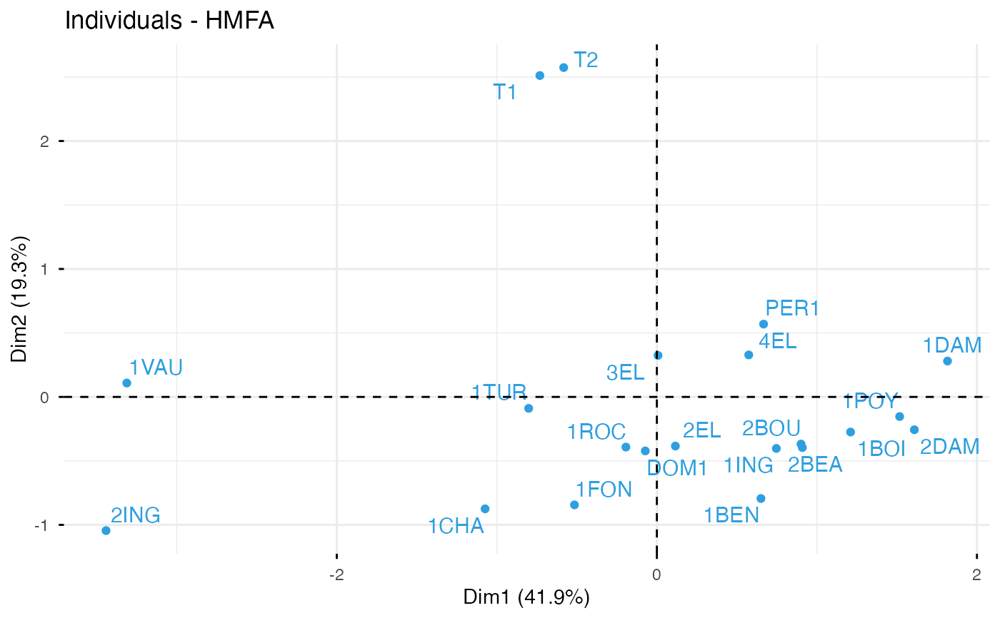
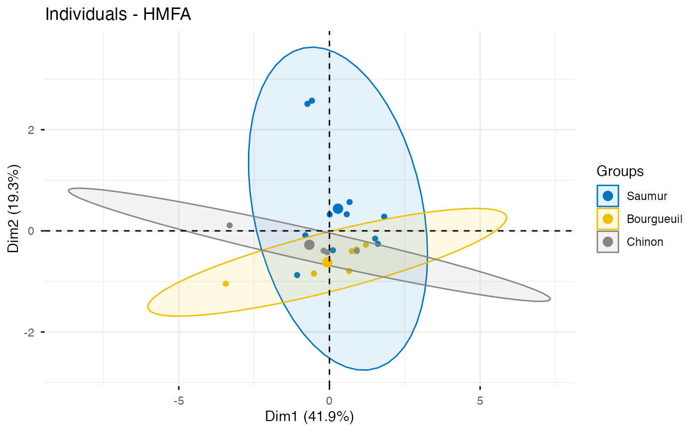
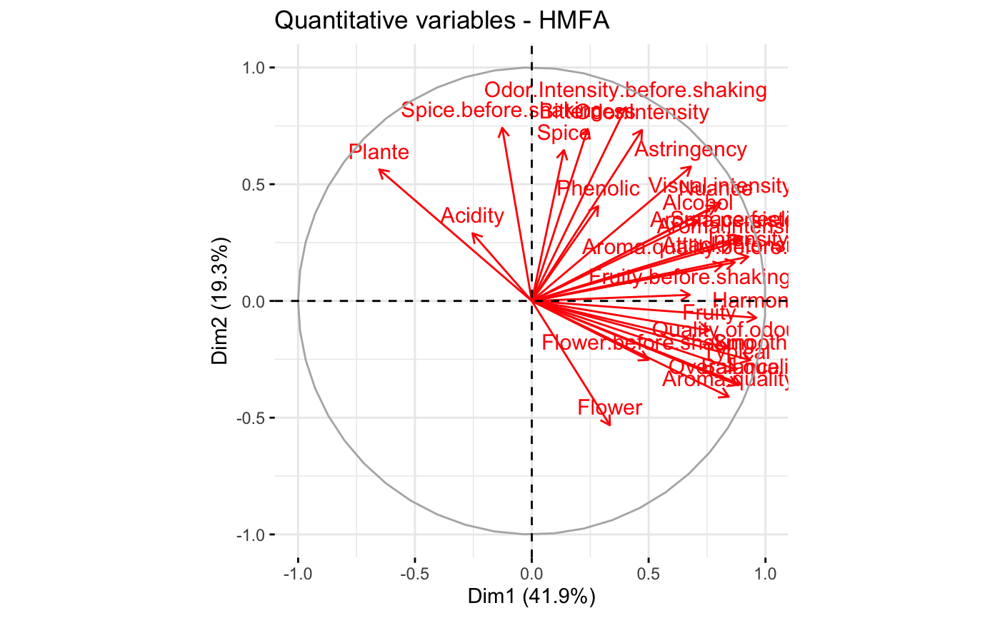
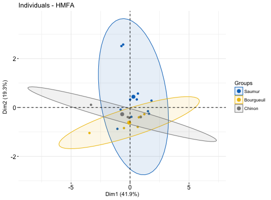
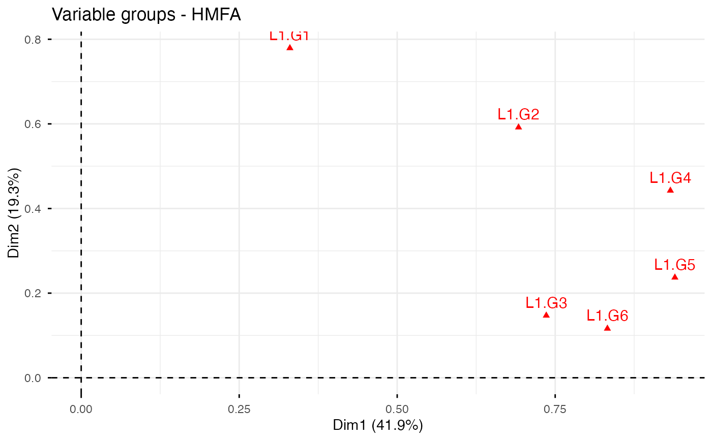
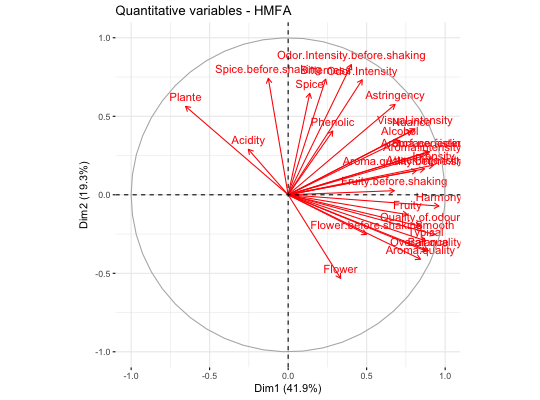
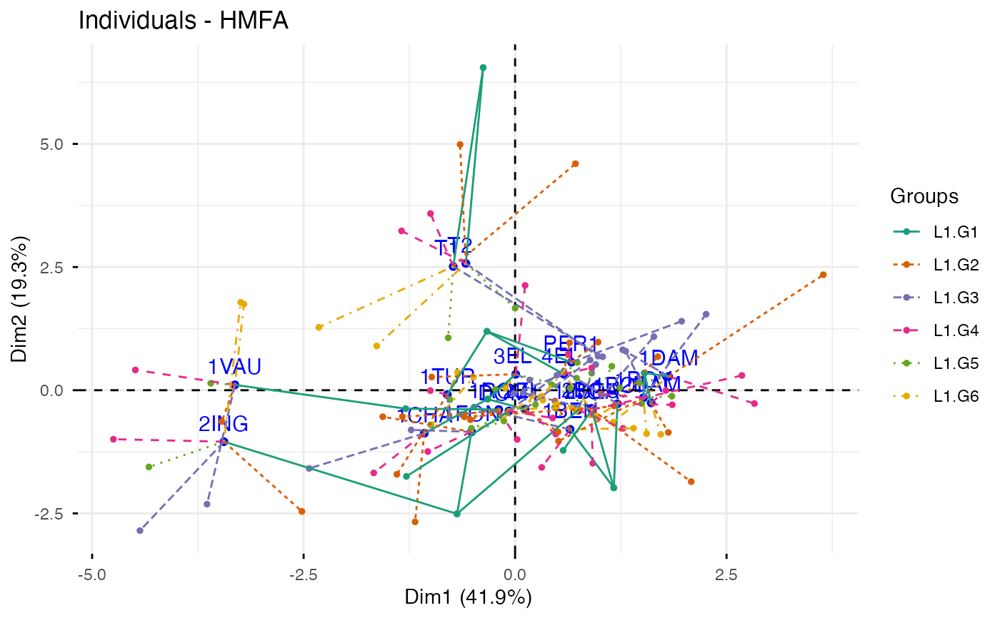

fviz_hmfa.RdHierarchical Multiple Factor Analysis (HMFA) is, an extension of
MFA, used in a situation where the data are organized into a hierarchical
structure. fviz_hmfa() provides ggplot2-based elegant visualization of HMFA
outputs from the R function: HMFA [FactoMineR].
fviz_hmfa_ind(): Graph of individuals
fviz_hmfa_var(): Graph of variables
fviz_hmfa_quali_biplot(): Biplot of individuals and qualitative variables
fviz_hmfa(): An alias of fviz_hmfa_ind()
fviz_hmfa_ind(X, axes = c(1, 2), geom = c("point", "text"), repel = FALSE, habillage = "none", addEllipses = FALSE, shape.ind = 19, col.ind = "blue", col.ind.sup = "darkblue", alpha.ind = 1, select.ind = list(name = NULL, cos2 = NULL, contrib = NULL), partial = NULL, col.partial = "group", group.names = NULL, node.level = 1, ...) fviz_hmfa_var(X, choice = c("quanti.var", "quali.var", "group"), axes = c(1, 2), geom = c("point", "text"), repel = FALSE, col.var = "red", alpha.var = 1, shape.var = 17, col.var.sup = "darkgreen", select.var = list(name = NULL, cos2 = NULL, contrib = NULL), ...) fviz_hmfa_quali_biplot(X, axes = c(1, 2), geom = c("point", "text"), repel = FALSE, habillage = "none", title = "Biplot of individuals and qualitative variables - HMFA", ...) fviz_hmfa(X, ...)
| X | an object of class HMFA [FactoMineR]. |
|---|---|
| axes | a numeric vector of length 2 specifying the dimensions to be plotted. |
| geom | a text specifying the geometry to be used for the graph. Allowed
values are the combination of |
| repel | a boolean, whether to use ggrepel to avoid overplotting text labels or not. |
| habillage | an optional factor variable for coloring the observations by groups. Default value is "none". If X is an HMFA object from FactoMineR package, habillage can also specify the index of the factor variable in the data. |
| addEllipses | logical value. If TRUE, draws ellipses around the individuals when habillage != "none". |
| shape.ind, shape.var | point shapes of individuals and variables, respectively. |
| col.ind, col.var | color for individuals, partial individuals and variables, respectively. Can be a continuous variable or a factor variable. Possible values include also : "cos2", "contrib", "coord", "x" or "y". In this case, the colors for individuals/variables are automatically controlled by their qualities ("cos2"), contributions ("contrib"), coordinates (x^2 + y^2 , "coord"), x values("x") or y values("y"). To use automatic coloring (by cos2, contrib, ....), make sure that habillage ="none". |
| col.ind.sup | color for supplementary individuals |
| alpha.ind, alpha.var | controls the transparency of individual, partial individual and variable, respectively. The value can variate from 0 (total transparency) to 1 (no transparency). Default value is 1. Possible values include also : "cos2", "contrib", "coord", "x" or "y". In this case, the transparency for individual/variable colors are automatically controlled by their qualities ("cos2"), contributions ("contrib"), coordinates (x^2 + y^2 , "coord"), x values("x") or y values("y"). To use this, make sure that habillage ="none". |
| select.ind, select.var | a selection of individuals and variables to be drawn. Allowed values are NULL or a list containing the arguments name, cos2 or contrib:
|
| partial | list of the individuals for which the partial points should be drawn. (by default, partial = NULL and no partial points are drawn). Use partial = "All" to visualize partial points for all individuals. |
| col.partial | color for partial individuals. By default, points are colored according to the groups. |
| group.names | a vector containing the name of the groups (by default, NULL and the group are named group.1, group.2 and so on). |
| node.level | a single number indicating the HMFA node level to plot. |
| ... | Arguments to be passed to the function fviz() and ggpubr::ggpar() |
| choice | the graph to plot. Allowed values include one of c("quanti.var", "quali.var", "group") for plotting quantitative variables, qualitative variables and group of variables, respectively. |
| col.var.sup | color for supplementary variables. |
| title | the title of the graph |
a ggplot
http://www.sthda.com/english/
# Hierarchical Multiple Factor Analysis # ++++++++++++++++++++++++ # Install and load FactoMineR to compute MFA # install.packages("FactoMineR") library("FactoMineR") data(wine) hierar <- list(c(2,5,3,10,9,2), c(4,2)) res.hmfa <- HMFA(wine, H = hierar, type=c("n",rep("s",5)), graph = FALSE) # Graph of individuals # ++++++++++++++++++++ # Color of individuals: col.ind = "#2E9FDF" # Use repel = TRUE to avoid overplotting (slow if many points) fviz_hmfa_ind(res.hmfa, repel = TRUE, col.ind = "#2E9FDF")# Color individuals by groups, add concentration ellipses # Remove labels: label = "none". # Change color palette to "jco". See ?ggpubr::ggpar grp <- as.factor(wine[,1]) p <- fviz_hmfa_ind(res.hmfa, label="none", habillage=grp, addEllipses=TRUE, palette = "jco") print(p)# Graph of variables # ++++++++++++++++++++++++++++++++++++++++ # Quantitative variables fviz_hmfa_var(res.hmfa, "quanti.var")# Graph of categorical variable categories fviz_hmfa_var(res.hmfa, "quali.var")# Groups of variables (correlation square) fviz_hmfa_var(res.hmfa, "group")# Biplot of categorical variable categories and individuals # +++++++++++++++++++++++++++++++++++++++++++++++++++++++++ fviz_hmfa_quali_biplot(res.hmfa)# Graph of partial individuals (starplot) # +++++++++++++++++++++++++++++++++++++++ fviz_hmfa_ind(res.hmfa, partial = "all", palette = "Dark2")